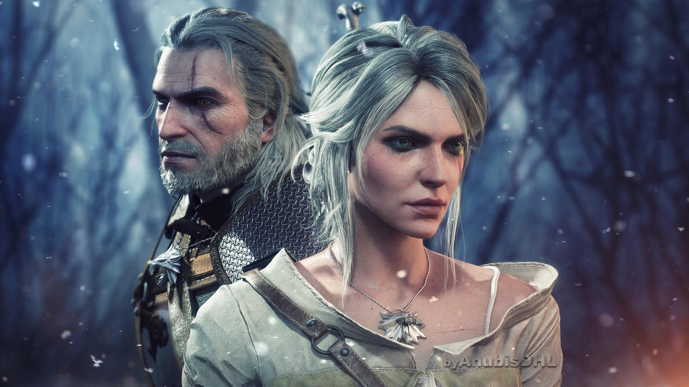
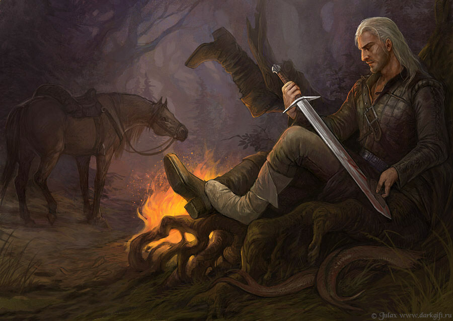
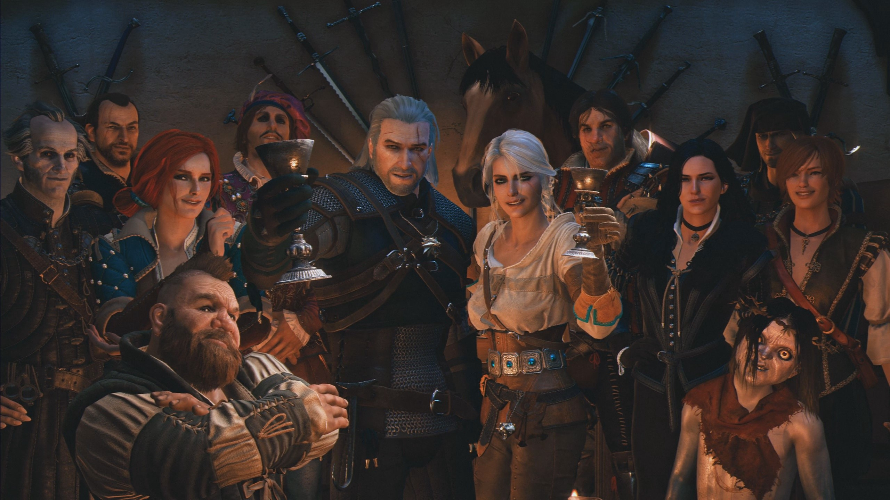

Geralt é o filho da feiticeira Visenna e, possivelmente, do mercenário Korin. Após seu nascimento, Geralt foi deixado por sua mãe na Escola do Lobo em Kaer Morhen. Ali, Geralt recebeu treinamento e se tornou um bruxo. Ele sobreviveu a várias mutações necessárias para evoluir suas habilidades e passou pela Prova das Ervas. O treinamento e as modificações físicas providenciaram a Geralt capacidades físicas e mentais sobre-humanas como reflexos aguçados, agilidade, força, visão e audição melhorada.
Devido ao seu exitoso sucesso nas provas, Geralt foi escolhido para experimentos com mutagênicos adicionais. E foi ele o único Bruxo sobrevivente. Em consequência disso, seus cabelos são brancos.
No conto Uma Questão de Preço, Geralt evoca a Lei da Surpresa após ser questionado como gostaria de ser recompensado. Meses depois nasce a Criança Surpresa. Cirilla, filha de Pavetta de Cintra com Duny.
Geralt tem uma égua chamada Plotka e todas as suas éguas são nomeadas assim.
Seu melhor amigo é o bardo Jaskier e seu único e verdadeiro amor é Yennefer.
Todos os direitos reservados.